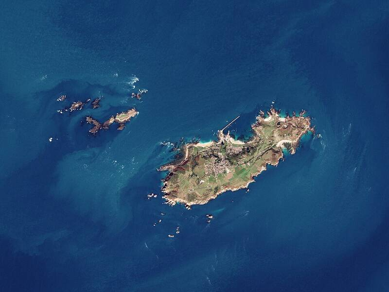

Alderney sighting
Channel Islands, 2007

On April 23, 2007, airline captain Ray Bowyer and some of his passengers saw two large, bright yellow objects. It is one of the best-documented modern airline sightings, and it has no confirmed explanation. 1
Open in the interactive Watcher
Sources
- 2007 Alderney UFO sighting Wikipedia